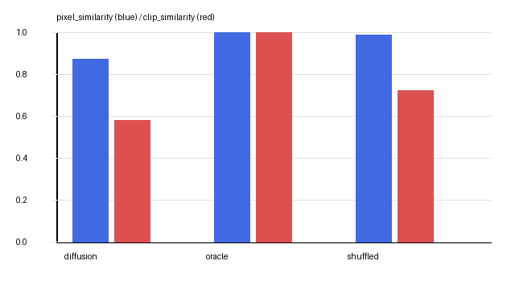
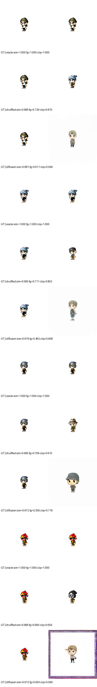

Completed 2026.08.29 · KMS 389 · Seed 42
Can 30 learned tokens compose unseen Maple outfits?
This end-to-end milestone rendered every combination of ten hats, ten tops, and ten bottoms, trained joint SDXL textual inversion, and evaluated 100 combinations excluded from training.
The pipeline completed, but the learned model scored below a shuffled renderer control on CLIP and LPIPS. Reliable cosmetic binding was not established.
01 / Protocol
Full factorial data, combination-level holdout
All item IDs came from one pinned MapleStory.IO KMS snapshot. Character identity, pose, canvas, rendering parameters, and random seeds stayed fixed.
- Rendered images
- 1,000
- Unique combinations
- 1,000
- Items
- 10 + 10 + 10
- Appearances per item
- 100
- Train / test
- 800 / 200
- Combination overlap
- 0
- Train item coverage
- 30 / 30
- Canvas
- 256 px · white
Dataset manifest SHA-256
e2e1842de5a7c94073b171397ea760d1b6c6f57cb01a0970d2798f2483472ae5
02 / Training
Only 30 rows across both SDXL text encoders may change
The VAE, UNet, and text-encoder bodies remained frozen. Non-item embedding rows were restored after every optimizer update, leaving 61,440 effective learned parameters.
| Base model | SDXL 1.0, pinned revision |
|---|---|
| Method | Dual-CLIP joint textual inversion |
| Optimizer | AdamW · constant 5e-4 |
| Steps / batch | 3,000 / 4 |
| Precision | BF16 |
| Duration | 15.18 minutes |
| Peak CUDA allocation | 9.11 GiB |
Final-step noise makes the single final loss less reliable than window means.
03 / Held-out results
The controls pass; item-token composition does not
The first 100 test combinations used 30 diffusion steps and CFG 7.0. Oracle verifies exact matching. Shuffled assigns another real renderer image as a negative control.
| Backend | Pixel similarity ↑ | Foreground IoU ↑ | CLIP ↑ | LPIPS ↓ |
|---|---|---|---|---|
| Oracle | 1.0000 | 1.0000 | 1.0000 | 0.0000 |
| Shuffled | 0.9903 | 0.7559 | 0.7257 | 0.0472 |
| Joint TI | 0.8761 | 0.1793 | 0.5809 | 0.3641 |


04 / Verdict
Pipeline completion is not evidence of compositional identity
The learned outputs often resemble generic chibi characters, but their requested hat, top, and bottom identities are weaker than another real outfit selected at random. Some outputs also introduce frame artifacts.
Metric scope: CLIP and LPIPS compare the whole normalized image. No per-item mask was used; category-conditioned summaries are therefore not localized garment scores.